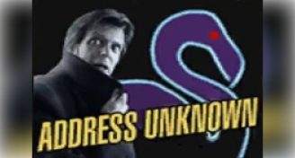
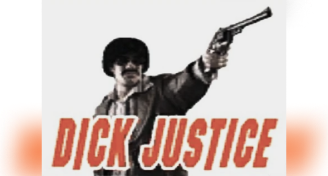

La chute de max
1.1
Les origines de Max Paynes
J’avais tout pour finir ma vie heureux, le genre de vie où le soleil ne se couche jamais. J’avais une fille, une femme et un travail que j’aimais.
Mais tout a dérapé quand ce drogué à massacrer tout ce que j’avais de plus cher. L’ombre en moi s’est éveillée…
La vengeance reste un choix, c’est pas quelque chose qui nous tombe dessus. C’est une chose que j’ai volontairement choisie, le choix de devenir le fantôme qui rôde pour sa vengeance.
1.2
Mona Sax
Elle est apparue quand j’étais le plus perdu. Mona Sax. Mon reflet, elle était tout ce que je n’osais plus être.
Nous étions deux survivants sur la même barque qui navigue sur un océan de cadavres. Je cherchais la justice pendant qu’elle donnait tout pour survivre.
Les damnés ont la chance de tomber amoureux de sa propre destruction. Dans ses yeux, je voyais ma chute et la fin de ma souffrance. Était-ce les flammes que je voyais dans ses yeux qui réconfortaient mon cœur gelé ?
1.3
La chute de Max
Alfred, le marionnettiste qui tire les ficelles depuis sa chaise roulante. Il était l’un des concepteurs de la drogue qui a rendu fou l’homme qui a assassiné ma famille et détruit ma vie. C’est chez lui que j’ai appris que Mona avait été engagée pour se débarrasser de moi. Je pensais devoir percer la vérité pour guérir, mais la vérité se jouait de moi. Depuis tout ce temps, je courais après des ombres qui me traquaient.
Alors que le manoir brûlait, Mona est tombée, abattue par Vladimir. Elle était la dernière barrière contre ma folie. Tous ceux qui m’entourent finissent toujours par mourir, quand viendra mon tour ?
Merci, Mona, de m’avoir aidé lors de mon deuil.
J’AI RÊVÉ DE MA FEMME, ELLE ÉTAIT MORTE, MAIS TOUT ALLAIT BIEN
Mise en abime de Max Payne 2
Il y a 40 minutes d’émissions télé dans ce jeu. Là où dans le premier opus, elles servaient à informer le protagoniste à l’évolutions de son enquête et sur les recherches de la police à son égard. Dans ce dernier jeu, les émissions ne servent qu’à créer un univers vivant, avec des médias intra-diégétiques qui comportent la mises en scène de Sam Lake, l’écrivain de la série de jeu Max Payne.
Les émissions du jeu
Lords and ladies
Une émission qui parodie une série d’amour à l’époque médiévale.
Address unknow

Une série qui donne vie à la folie de Max Payne.
Dick justice

Une série satire des anciennes séries policiers des années 70.